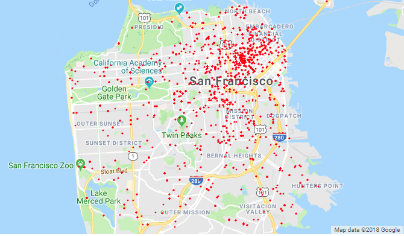

Heatmaps
Most heatmaps will attest that a vast majority of emergency calls come from urban northeast SF, as seen in the following visualization.
More heatmaps and analyses can be found in Future Preparation.
All Data Points

Heatmaps of Dispatch Data
Some incidents were infrequent enough as to plot their actual points.
All Data Points
Redder color represents greater concentration of emergency calls observed from that area.

Calls by Response Time
Which calls took longest to reach?
(response time is time needed to arrive on scene after call is received)
Green : Less than 20 minutes to respond, Red : 20 minutes or more to respond
Call Type - Medical Emergency

Call Final Disposition - Fire
Call Type - Alarms
Call Type - Potential Life-Threatening